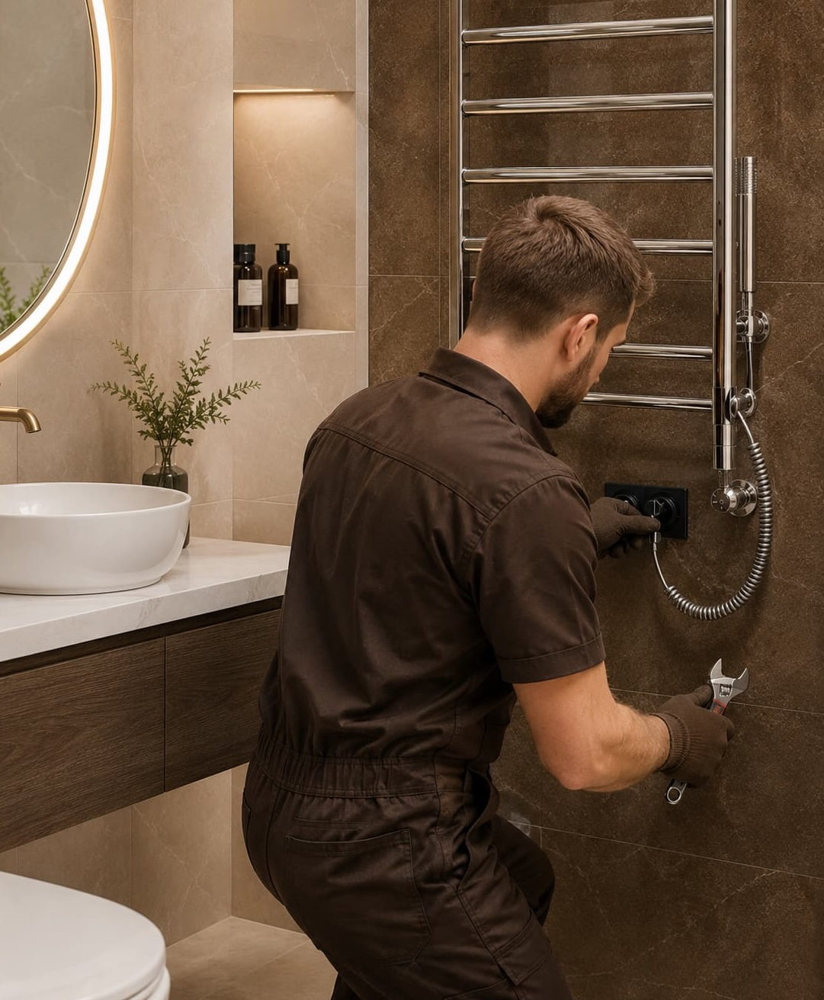

Issue diagnosis
Ask how the provider identifies the cause of the problem, not just the visible symptom. Hardware, fixture layout, seal, and glass issues may need different solutions.
Tile & Bath helps homeowners request contact from independent providers for bathtub replacement needs. The platform does not repair bathroom spaces directly or act as a contractor.

Bathtub replacement may apply when the current tub is difficult to enter, worn at the surface, outdated in style, or no longer aligned with daily comfort and safety goals.
Some repair requests are simple. Others may reveal deeper problems such as water intrusion, failed seals, fixture layout rot, warped components, or outdated parts that are difficult to source. That is why a clear provider review matters.
Tile & Bath helps homeowners start the comparison process by routing repair requests toward independent local providers who may evaluate the issue and explain possible next steps.
A good repair conversation should separate symptoms from root causes and explain whether a repair, part replacement, glass service, or full replacement is the better fit.
Ask how the provider identifies the cause of the problem, not just the visible symptom. Hardware, fixture layout, seal, and glass issues may need different solutions.
Compare what is included in the repair, whether parts are available, and whether the provider recommends repair or replacement.
Ask whether repair labor or parts are covered and whether any existing product warranty could be affected by the work.
Review labor, parts, diagnostic fees, exclusions, access requirements, timeline, and any conditions that could change the repair cost.
Repair recommendations can vary depending on the age of the bathroom, product type, part availability, and whether the issue is isolated or part of a larger condition.
Older tubs may involve legacy dimensions, plumbing constraints, or surround conditions that influence replacement options, which can affect whether repair is practical.
Warping, rot, water damage, swelling, or movement around the fixture layout may change the provider’s recommendation.
Locks, balances, hinges, cranks, tracks, and rollers can affect how easily the bathroom opens, closes, locks, and seals.
If repairs are repeated or costly, providers may suggest replacement. Ask them to explain the reasoning and provide written options where possible.

Share the issue once and compare provider responses directly. Ask each company to explain likely causes, repair scope, parts, timing, warranty limits, and when replacement might be recommended instead.
No. Tile & Bath is an independent matching platform. It does not repair remodel bathrooms directly or act as a contractor.
Ask how the issue will be diagnosed, what repair is included, whether parts are available, what is excluded, and whether repair or replacement is the better long-term option.
Not always. Repair depends on bathroom condition, damage type, part availability, fixture layout condition, and whether the issue affects safety, performance, or water protection.
Pricing may depend on diagnostic time, parts, labor, bathroom scope, access, severity of the issue, urgency, and provider-specific pricing.
Yes. If a repair is costly or temporary, comparing repair and replacement options can help you understand the better long-term fit.